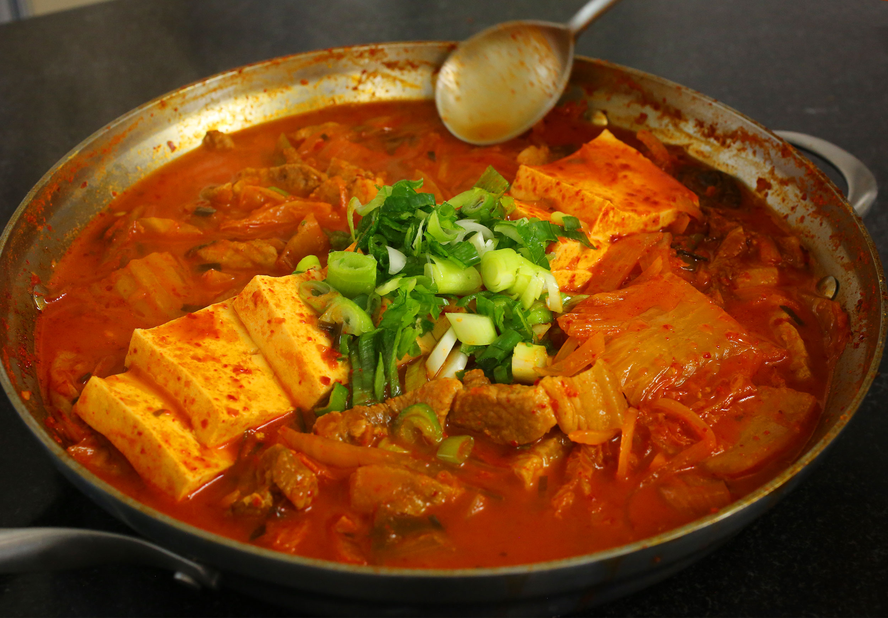

Kimchi Stew

Unleash your Korean side
Ingredients
- 1 lbs Kimchi
- 1/4 cup Kimchi Brine
- 1/2 lbs Pork
- 1 Tofu (optional)
- 3 Green Onions
- 1 Onion
- 2 tsp Red Pepper Powder
- 1 Tbsp Red Pepper Paste
- Sesame Oil
- Sugar, Salt
- Anchovy Stock
Steps
- Saute Kimchi in a pot over medium heat.
- Add pork and sliced onion.
- Add 2 diagonally sliced green onions.
- Add salt, sugar, pepper powder, pepper paste, sesame oil, and anchovy stock.
- Cover and cook on medium heat for 10 minutes.
- Open the lid and mix the stew with a spoon. Add sliced tofu.
- Cover and cook another 10-15 minutes.
- Chop 1 green onion and garnish the stew. Remove from heat and serve with rice.
Enjoy!
Return to Main Page